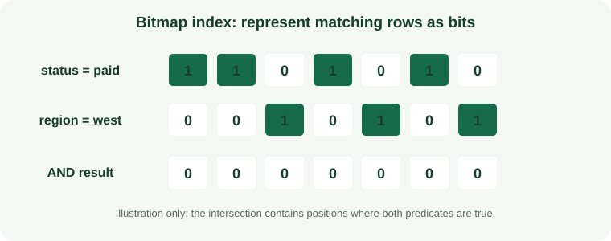

What Is a Bitmap Join Indexes in Oracle Database?
Stores bitmap representations of dimension-table values associated with fact rows, helping eligible star queries avoid repeated joins for filtering.
How the Bitmap Join Indexes Algorithm Works
Stores bitmap representations of dimension-table values associated with fact rows, helping eligible star queries avoid repeated joins for filtering.

When to Use Bitmap Join Indexes
Read-mostly warehouses with stable dimension relationships and repeated star-schema predicates.
How to Create a Oracle Database Bitmap Join Indexes
Review data quality, existing structures, feature support, build time, and deployment requirements before creating an index on a production table.
CREATE BITMAP INDEX sales_region_bji ON sales(customers.region) FROM sales, customers WHERE sales.customer_id = customers.customer_id;Bitmap Join Indexes Query Example
This example demonstrates the matching query shape. Check the execution plan to confirm that the engine can use the index.
SELECT SUM(s.amount) FROM sales s JOIN customers c ON c.customer_id = s.customer_id WHERE c.region = 'West';Queries Supported by Bitmap Join Indexes
Read-mostly warehouses with stable dimension relationships and repeated star-schema predicates. A similar-looking predicate may not use the same access path; operators, expressions, key order, and data type all matter.
Read Performance, Storage, and Write Costs
Maintenance may be expensive and DML restrictions make it unsuitable for heavily updated data. Indexes reduce some search work but require storage and add maintenance to writes.
Bitmap Join Indexes Limitations and Common Mistakes
Eligibility depends on schema constraints, join shape, and Oracle release.
Do not assume that an index being present means the optimizer chose it or that the query became selective.
How to Measure and Tune Bitmap Join Indexes
Validate the transformation in the actual plan and include load/refresh windows in cost tests.
Compare representative plans and timings before and after, including concurrent writes and realistic data volumes.
Bitmap Join Indexes Questions
Will the database always use this index?
No. The optimizer weighs selectivity, estimated costs, statistics, cache state, and the amount of data returned.
What should I verify before production?
Confirm version support, query compatibility, write overhead, build/rollback procedures, and index behavior during backup and recovery.
Official Oracle Database Index Documentation
Check Oracle Database Concepts: Indexes and Index-Organized Tables for release-specific requirements and supported operators.